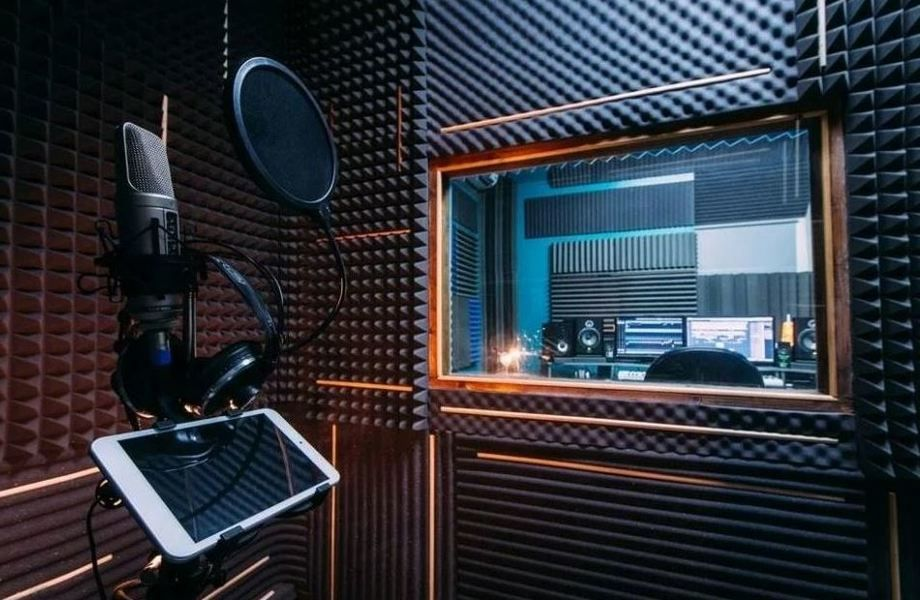

Полный спектр услуг для качественного звука

Наша студия предлагает комплексный подход к созданию, обработке и финальному оформлению звука. Мы работаем как с профессиональными музыкантами и продюсерами, так и с начинающими исполнителями, помогая им раскрыть потенциал своих композиций и достичь высокого уровня звучания.
Сведение и мастеринг
Эти два этапа – основа профессионального саунд-дизайна. В процессе сведения мы:
- Выравниваем громкость всех элементов трека, чтобы создать гармоничный баланс.
- Добавляем эффекты (реверберация, задержка, компрессия, эквализация и др.), чтобы придать глубину и пространственность звучанию.
- Очищаем запись от лишних шумов, улучшая общее качество звука.
После сведения наступает этап мастеринга – финальная обработка, во время которой мы:
- Делаем звук чистым, мощным и конкурентоспособным.
- Оптимизируем трек для разных платформ (стриминговые сервисы, радио, CD и винил).
- Достигаем нужной громкости и четкости, чтобы трек звучал хорошо на любых устройствах – от студийных мониторов до наушников.
Запись вокала и инструментов
Мы создали удобную и уютную атмосферу для записи, где артист может полностью раскрыться. Используем высококачественные микрофоны и предусилители, которые передают все нюансы голоса или инструмента. Наши звукоинженеры работают с разными жанрами – от поп-музыки и рока до хип-хопа, электронной музыки и классических оркестровых композиций.
Создание джинглов, рекламных аудиороликов и саунд-дизайн
Если вам нужен уникальный аудиобрендинг – мы поможем создать запоминающийся звуковой образ для вашей компании, подкаста, YouTube-канала или радиоэфира. Мы работаем с брендами, создавая джинглы, музыкальные заставки и рекламные ролики с профессиональной озвучкой и обработкой.
Аранжировка и продакшн
У вас есть мелодия или идея, но не хватает музыкального сопровождения? Мы поможем создать полноценную аранжировку с учетом всех современных тенденций. Наши продюсеры и аранжировщики работают в разных стилях и могут адаптировать музыку под ваше видение.
Современное оборудование и опытные специалисты
Мы используем лицензионное программное обеспечение, профессиональные аудиоинтерфейсы, аналоговые приборы обработки и топовые плагины. Каждый проект курируется опытными звукоинженерами, которые знают, как добиться чистого, объемного и сочного звучания.
Индивидуальный подход и гибкость
Мы понимаем, что каждый проект уникален, поэтому всегда подстраиваемся под пожелания клиента. Будь то работа в студии или удаленное сотрудничество – мы обеспечим максимальный результат и удобство.